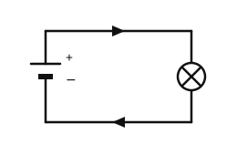

Der einfache Stromkreis
Mit einem KI-Tutor lernen
Ein KI-Tutor erklärt dir diese Seite und hilft dir bei den Übungen. Wähl deinen Assistenten:
Mit Claude öffnen Mit ChatGPT öffnen Mit Mistral Vibe öffnen
Du nutzt dein eigenes Konto beim Anbieter. Der Assistent ist kein Angebot von lernapps.net: lernapps liefert nur Inhalte und Übungen. Die Wahl gilt für alle Seiten, nur auf diesem Gerät.
Was du schon kennst
Du hast schon einmal eine Lampe mit einer Batterie zum Leuchten gebracht. Vielleicht hat eine Taschenlampe einmal nicht geleuchtet, obwohl die Batterie neu war. Oft liegt es dann an einer Lücke im Weg des Stroms.
Danach kannst du einen einfachen Stromkreis aufbauen und erklären, warum er geschlossen sein muss.
Warum der Kreis geschlossen sein muss
Die Zeichnung zeigt eine Batterie, eine Lampe und zwei Kabel. Die Zahlen in den kleinen Kreisen auf der Zeichnung gehören zu der Liste darunter und sagen dir, was was ist. Eine Batterie hat zwei Anschlüsse, die Pole. In der Zeichnung ist der lange dünne Strich der Pluspol (+), der kurze dicke Strich der Minuspol (−). Die Pfeile zeigen den Weg des Stroms: Er geht vom Pluspol durch das obere Kabel zur Lampe, durch die Lampe und durch das untere Kabel zurück zum Minuspol. Die Batterie schickt den Strom also los und nimmt ihn am Ende wieder auf. So hat man die Richtung in der Physik vereinbart.

- Batterie
- Lampe
- Kabel
Folge den Pfeilen mit dem Finger von der Batterie über die Lampe zurück zur Batterie.
Quelle: eigene Zeichnung. Lizenz: CC-BY-4.0.Der Weg beginnt und endet an der Batterie. Man nennt ihn einen Stromkreis. Die Lampe leuchtet nur, wenn dieser Weg an keiner Stelle unterbrochen ist.
- Stromkreis
Ein Stromkreis ist ein geschlossener Weg für den Strom, der an der Batterie beginnt und dort wieder endet.
Ein Irrtum, den viele haben
„Der Strom läuft zur Lampe und ist dort aufgebraucht.“ Das stimmt nicht. Der Strom fließt durch die Lampe hindurch und auf dem zweiten Weg zurück zur Batterie. Darum braucht die Lampe zwei Kabel.
Beispiel: Die Lampe bleibt dunkel
Eine Lampe hängt nur an einem Kabel
Du verbindest den Pluspol der Batterie mit der Lampe. Vom Minuspol führt kein Kabel zur Lampe. Brennt sie?
- Folge dem Weg des Stroms mit dem Finger: Pluspol, Kabel, Lampe.
- Von der Lampe aus gibt es keinen Weg zurück zum Minuspol. Hier ist die Lücke.
- Ohne zurückführenden Weg ist der Kreis offen, und es fließt kein Strom. Die Lampe bleibt dunkel.
- Du schließt den Kreis, indem du ein zweites Kabel von der Lampe zum Minuspol legst.
Übung
Übung
Lösung
Richtige Antwort: Batterie – Sie schickt den Strom los und nimmt ihn wieder auf; Lampe – Sie leuchtet, wenn Strom hindurchfließt; Kabel – Sie verbinden die Teile zu einem Weg
Die Batterie, die Lampe und die Kabel gehören zusammen zu einem Weg, der an der Batterie beginnt und endet.
Mehr dazu:
Übung
Lösung
Richtige Antwort: Die Aussage stimmt nicht.
Bei einem offenen Stromkreis fließt kein Strom, also leuchtet die Lampe nicht. Der Strom braucht einen Weg ohne Lücke, der zur Batterie zurückführt.
Mehr dazu:
Übung
Lösung
Schaltung A
In Schaltung A fehlt ein Stück im unteren Kabel. Der Weg ist unterbrochen, also fließt kein Strom.
Schaltung B richtige Antwort
In Schaltung B führt der Weg ohne Lücke von der Batterie durch die Lampe und zurück. Der Kreis ist geschlossen.
Schaltung C
In Schaltung C fehlt ein Stück im oberen Kabel. Der Weg ist unterbrochen, also fließt kein Strom.
Eine Lampe leuchtet nur, wenn der Weg des Stroms von der Batterie durch die Lampe und zurück geschlossen ist.
Mehr dazu:
Übung
Lösung
Richtige Antwort: Die Aussage stimmt.
Ja. Auch hier ist der Weg geschlossen: Der Strom fließt durch die Lampe und über den Metallstreifen zurück zur Batterie. Das zweite Kabel ist nur versteckt.
Mehr dazu: